在实践中我们可以将任务拆分成多个子任务并行执行来提高程序的性能。
“性能”这个词过于含糊，更准确的说应该是：延迟（latency）和吞吐量（throughput）。本文举几个简单的例子来解释在固定线程池大小的情况下，不同的并行程度与延迟和吞吐量的关系。
场景
假设我们现在有一个task，其执行时长需要2秒。这个task可以被无限拆分，并且执行时长等比例缩减,比如拆分成2个task，那么执行时长变成1秒。同时我们有一个容量为6的线程池，这意味着同一时间范围内最多只能有6个线程工作，同时每个线程可以独占一个CPU核心。
然后给出不同尺寸的工作集——一个尺寸为4的工作集代表意味着有4个task待执行——来观察当task被各种拆分时的吞吐量和延迟：
- task不被拆分时
- task被拆分成2个sub-task的情况
- task被拆分成4个sub-task的情况
- task被拆分成8个sub-task的情况
先来看看task不被拆分时的执行情况：

图中例举的当工作集尺寸=10时，每个task的执行时间情况。每一条线都是一个task，橘黄色部分是真正的执行时间，蓝色虚线是等待所花费的时间。这些task被同时提交到线程池中，所以起点相同。因为线程池大小为6，因此前6个task没有等待时间，从第7个task则必须等前面的task执行结束后才能开始执行，它需要等待2秒（单个task的执行时长为2秒）。
下面是task被拆分成2个subtask的执行情况：
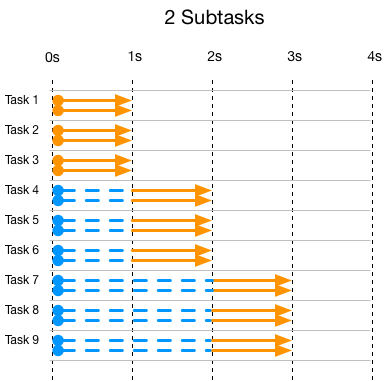
可以看到task被拆分成2个subtask，每个task所需要的线程也变成了2，总的时间减半变成1秒。和前一个图一样当线程池用满的时候，新的task/subtask必须等待。
下面是task被拆分成4个subtask的执行情况：
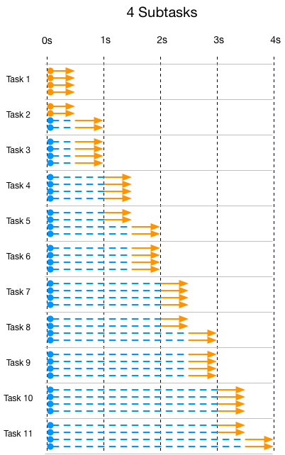
下面是task被拆分成6个subtask的执行情况（注意时间单位不同了），图里的1根线条代表2个subtask：
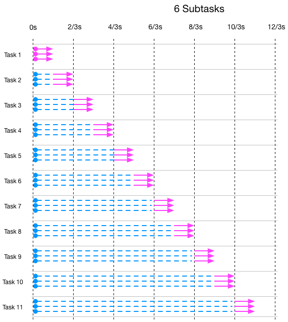
这个是task被拆分成8个subtask的执行情况（注意时间单位不同了），图里的1根线条代表2个subtask：
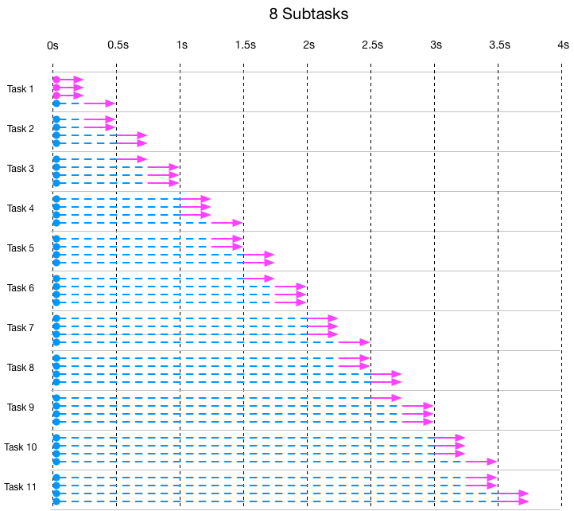
吞吐量对比
吞吐量的计算公式：吞吐量 = task数量 / 最慢的task所花费的时间。
下面是吞吐量对比图：
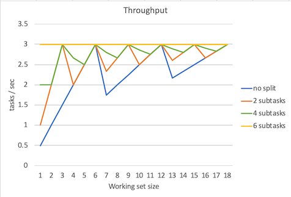
图中吞吐量线条的锯齿不用在意，因为这和是否用足了线程池中的线程有关。拿不拆分task举例，当工作集=1时，吞吐量 = 1 / 2 = 0.5 tasks/sec，当工作集=6时 吞吐量 = 6 / 2 = 3 tasks/sec。当工作集=7时 吞吐量 = 7 / 4 = 1.75 tasks/sec，下降了，这是因为有5个线程空闲着没有工作，第7个task拖了后腿。所以我们只需要看吞吐量峰值就行了。而且不出意外可以看到，当subtask数量为6是，吞吐量稳定在3 tasks/sec，这是因为总是会用足线程池中的线程。
可以看到不论是task如何拆分，吞吐量的峰值都是3 task/sec。在如何估算吞吐量以及线程池大小提到计算吞吐量的公式：
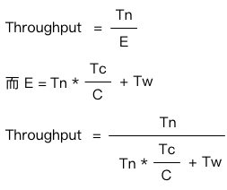
在我们这个场景中，Tw=0，所以公式就变成了 C / Tc，我们的C=6，而Tc=2s，所以吞吐量就是3 tasks/sec。
同时可以看到，当6个CPU用满的情况下，无论任务如何做并行化处理，其吞吐量峰值维持不变。
当然你也不可能通过扩大线程池来提高吞吐量，因为CPU的数量是固定的。
延迟对比
下面是延迟平均数、延迟中位数、延迟95%位数、延迟99%位数、延迟100%位数（最大延迟数）的对比图。
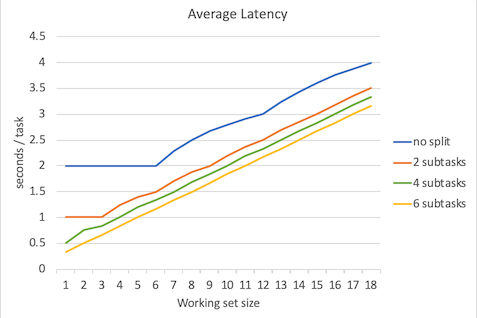
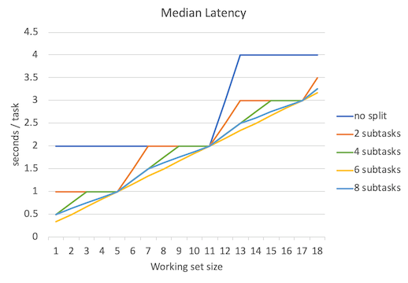
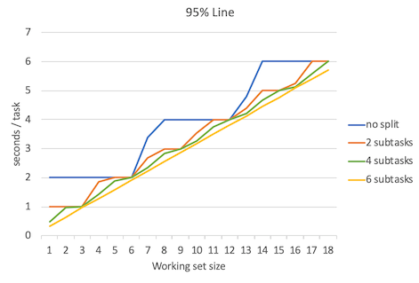
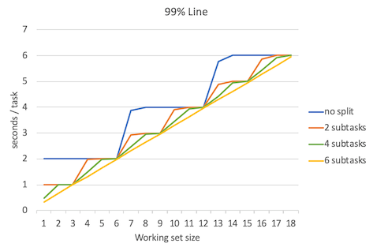
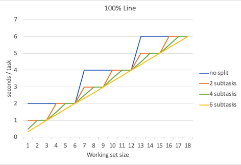
不出所料，当并行程度越高的时候延迟就越低，但是要注意的是，并行程度的增高所带来的延迟降低的边际效益是递减的。
当subtask > 6时
那么当subtask数量 > 6 时会发生什么？下面是subtask分别为8、10时候的吞吐量、延迟数据。
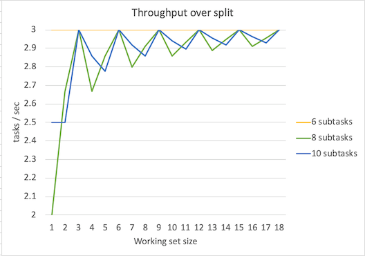

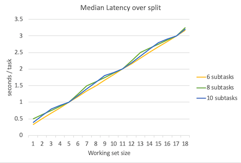
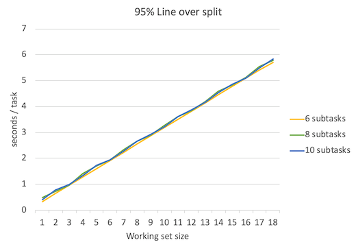
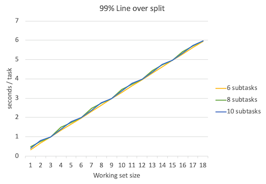
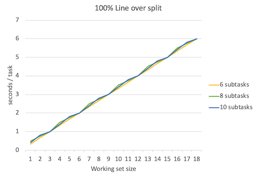
可以看到吞吐量峰值保持不变，依然是3 tasks/sec。延迟比subtask=6时略有增加。上图只是理论值，实际情况中考虑到线程频繁调度等开销，结果会更糟。
数据excel可以在这里下载。